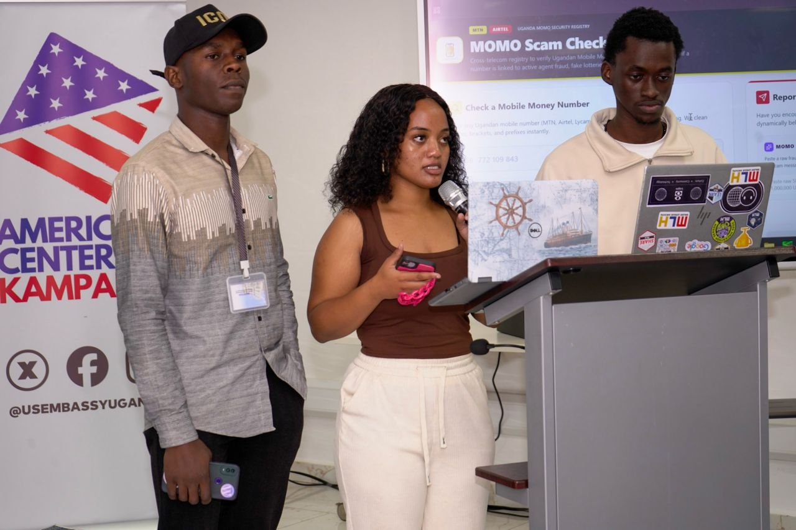

Build With AI Makerere Hackathon
Shakiran Nannyombi & Benjamin Wakida Eldon · American Center Kampala
Team Tech Clan built MoMo Scam Checker, an AI-powered scam reporting platform using Gemini extraction and USSD simulation, and secured 2nd place at the MLH and GDG Makerere hackathon.